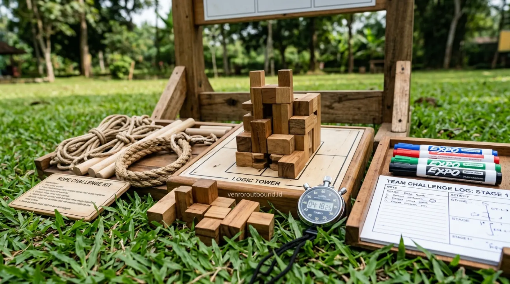

1. Dilema Pembinaan Karakter: Mengapa Siswa Mudah Jenuh di Ruangan?
Jawaban Langsung (AEO Overview): Metode experiential learning dalam outbound pelajar dapat memberikan pengalaman belajar yang lebih aktif dibandingkan metode seminar yang dominan pasif. Siswa menghadapi tantangan secara fisik dan sosial, kemudian melakukan refleksi sehingga materi pembelajaran dapat lebih mudah dikaitkan dengan pengalaman nyata dan bertahan lama dalam memori perilaku siswa.
Setiap awal tahun ajaran baru atau menjelang kelulusan, pihak sekolah dan komite pendidikan kerap merancang agenda pembinaan karakter. Tujuannya sangat mulia: membangun semangat juang, mempererat kebersamaan angkatan, dan menanamkan nilai-nilai integritas. Namun, format yang paling sering dipilih secara konvensional adalah mengumpulkan ratusan siswa di dalam aula atau gedung serbaguna untuk mendengarkan sesi ceramah seminar motivasi selama berjam-jam.
Meskipun motivator yang diundang memiliki kredibilitas luar biasa, dinamika psikologis usia remaja sering kali menunjukkan fenomena klasik: 15 menit pertama siswa menyimak, 30 menit kemudian fokus mulai buyar, dan setelah satu jam sebagian siswa mulai mengantuk, mengobrol, atau sibuk dengan ponsel mereka. Hal ini bukan semata-mata karena materi yang buruk, melainkan karena sifat dasar otak manusia—khususnya pada fase perkembangan remaja—belajar jauh lebih optimal melalui tindakan, keterlibatan sensorik, dan interaksi emosional langsung.
2. 5 Manfaat Nyata Outbound Dibandingkan Seminar Motivasi Ruangan
Berikut adalah 5 keunggulan substantif yang menjadikan kegiatan luar ruang terstruktur (outbound edukasi) sebagai media pembelajaran yang sangat berdampak bagi peserta didik:
1. Pembelajaran yang Menuntut Partisipasi Aktif (Active Engagement)
Dalam seminar ruangan, posisi siswa adalah penerima pasif (passive recipient). Mereka duduk di kursi, mendengarkan narasi pembicara, dan sesekali bertepuk tangan. Sebaliknya, dalam outbound pelajar, setiap individu adalah pelaku aktif. Tidak ada siswa yang dapat bersembunyi di balik barisan kursi; setiap orang memiliki peranan dalam menyelesaikan tantangan kelompok, mulai dari menyusun strategi, memegang tali pengaman, hingga memberikan aba-aba koordinasi.
2. Melatih Problem Solving Melalui Skenario Tanpa Kunci Jawaban
Materi seminar sering kali menyajikan kisah sukses inspiratif yang sudah selesai dan memiliki formula kesimpulan yang rapi. Namun di lapangan outbound, siswa dihadapkan pada masalah yang nyata, membingungkan, dan menuntut aksi seketika. Mereka harus belajar mengatasi kebuntuan logika, keterbatasan waktu, dan keterbatasan alat secara kolektif. Proses jatuh-bangun saat mencoba menemukan solusi inilah yang melatih nalar kritis dan ketahanan mental (adversity quotient) secara organik.

3. Meruntuhkan Sekat Sosial dan Membangun Teamwork Sejati
Di lingkungan sekolah, sering kali terbentuk kelompok-kelompok pertemanan eksklusif (circle) berdasarkan latar belakang minat atau status sosial. Seminar di dalam aula jarang mampu mencairkan sekat ini karena siswa tetap duduk bersama teman dekatnya. Di pos-pos outbound, pembagian kelompok dilakukan secara acak dan heterogen. Siswa yang pendiam, siswa yang aktif berorganisasi, dan siswa dengan latar belakang berbeda dipaksa bekerja sama dalam satu tujuan. Hambatan komunikasi runtuh secara alami karena mereka harus saling membantu saat melintasi rintangan.
4. Retensi Pengalaman dan Memori Kinestetik Lebih Tahan Lama
Konsep pendidikan modern mengenal prinsip bahwa memori kinestetik (belajar melalui gerakan tubuh dan pengalaman emosional) memiliki tingkat retensi ingatan yang jauh lebih panjang daripada memori audio-visual murni. Siswa mungkin melupakan slide PowerPoint presentasi seminar dalam hitungan minggu, namun mereka akan mengingat momen tawa, perjuangan menyeimbangkan papan kayu bersama rekan sekelas, dan kebanggaan menyelesaikan tantangan pos hingga bertahun-tahun kemudian.
5. Menghubungkan Nilai Sekolah dengan Praktik Perilaku Nyata
Nilai-nilai luhur seperti kejujuran, sportivitas, tenggang rasa, dan tanggung jawab sering kali hanya terdengar sebagai jargon teoritis saat disampaikan lewat mikrofon aula. Melalui skenario outbound, nilai-nilai ini diuji secara riil: apakah regu berbuat curang saat fasilitator berpaling, apakah mereka rela menunggu rekan yang berjalan paling lambat, dan bagaimana mereka menerima kekalahan tanpa menyalahkan satu individu.
3. Tabel Komparasi: Seminar Motivasi Ruangan vs Outbound Edukatif
Tabel berikut menyajikan perbandingan objektif antara kedua pendekatan pembinaan siswa untuk membantu pihak manajemen sekolah menentukan format kegiatan yang paling tepat:
| Parameter Evaluasi | Seminar Motivasi Ruangan | Outbound Edukatif Lapangan |
|---|---|---|
| Peran Peserta | Dominan pasif (duduk, mendengarkan, mencatat) | Aktif total (bergerak, berdiskusi, mengambil keputusan) |
| Stimulasi Indra | Audio-visual terbatas (suara pembicara & layar proyektor) | Kinestetik, visual alam bebas, sentuhan fisik, pendengaran |
| Interaksi Antarsiswa | Sangat minim selama sesi berlangsung | Intensif, kolaboratif, dan membutuhkan koordinasi terus-menerus |
| Uji Karakter Nyata | Hanya dalam bentuk imajinasi atau refleksi pikiran | Diuji langsung melalui hambatan fisik, waktu, dan aturan nyata |
| Daya Tahan Retensi | Cenderung menurun cepat dalam hitungan hari/minggu | Bertahan lama karena terhubung dengan memori emosional bersama |
| Kebutuhan Logistik | Aula/ruangan kelas, sound system, proyektor | Lapangan terbuka/hutan pinus, safety gear, instruktur lapangan |
4. Memahami Siklus Experiential Learning dalam Kegiatan Pelajar
Kunci keberhasilan outbound edukasi terletak pada sesi Debriefing atau refleksi terarah yang menutup setiap sesi permainan. Siklus ini memastikan bahwa aktivitas fisik tidak berhenti sebagai kelelahan otot semata, melainkan menjadi proses internalisasi kesadaran:
- Mengalami (Do): Menjalani rintangan permainan dengan segala emosi yang muncul (kegembiraan, kebingungan, frustrasi).
- Mengungkapkan (Review): Siswa diajak menceritakan apa yang dirasakan, faktor apa yang membuat kelompok berhasil atau gagal.
- Menyimpulkan (Learn): Fasilitator membantu merangkum pelajaran kunci mengenai pentingnya komunikasi dua arah dan saling percaya.
- Menerapkan (Apply): Merumuskan komitmen bagaimana sikap positif tersebut akan diterapkan dalam dinamika belajar sehari-hari di sekolah.
5. Bagaimana Menyisipkan Karakter Khusus dan Nilai Keagamaan ke Skenario Outbound
Banyak institusi sekolah berbasis agama atau sekolah dengan kurikulum karakter khusus bertanya: "Apakah outbound bisa selaras dengan nilai-nilai yayasan kami?" Jawabannya adalah sangat bisa.
Skenario outbound bersifat modular dan dapat disesuaikan. Contoh penerapannya mencakup nilai empati sosial, amanah kejujuran dalam menyampaikan pesan rahasia, serta penegakan adab disiplin waktu dan pemeliharaan kebersihan lingkungan alam (Zero Waste).
6. Sinergi Dua Metode: Kapan Menggunakan Seminar, Kapan Menggunakan Outbound?
Sebagai panduan bijak bagi kepala sekolah dan panitia, kita tidak perlu memposisikan seminar dan outbound sebagai dua metode yang saling bermusuhan. Keduanya dapat bersinergi secara harmonis:
Format Hybrid Ideal: Sesi pagi dapat diawali dengan pemaparan orientasi visi sekolah atau pengantar konsep kepemimpinan singkat di ruangan selama 45-60 menit. Setelah pemahaman konseptual terbentuk, seluruh peserta langsung diarahkan ke lapangan terbuka untuk menguji dan mengeksekusi konsep tersebut dalam simulasi outbound pelajar sepanjang sisa hari. Pendekatan kombinasi ini memberikan bekal pengetahuan sekaligus pembuktian praktis yang menyeluruh.
Rancang Program Outbound Edukatif untuk Sekolah Anda
Diskusikan kebutuhan rundown, pemilihan lokasi ramah pelajar, dan penyelarasan tema karakter bersama tim konsultan Vendor Outbound.
Dapatkan Proposal Program Edukatif di +62 82211221909Kesimpulan
Seminar motivasi ruangan memiliki keunggulan dalam menyampaikan konsep teoritis secara terpusat, namun kegiatan outbound edukatif memberikan dampak nyata yang jauh lebih mendalam dalam ranah pembentukan karakter, daya adaptasi, dan kekompakan antarsiswa. Melalui keterlibatan aktif di alam bebas, siswa tidak hanya mendengar tentang pentingnya kerja sama, melainkan merasakan langsung konsekuensi dari setiap keputusan yang mereka ambil bersama tim.
Bagi institusi sekolah yang ingin menciptakan program pembinaan siswa yang membekas dan menyenangkan, mengombinasikan kejelasan materi dengan simulasi outbound pelajar adalah investasi pendidikan yang terbukti efektif dan bernilai tinggi.
Pertanyaan Sering Diajukan (FAQ)

Arby Ardiansyah
Arby Ardiansyah menulis konten edukatif dan analitis mengenai pengembangan sumber daya manusia, program outbound institusi pendidikan, kepemimpinan pemuda, dan penerapan metodologi experiential learning untuk membantu institusi pendidikan merancang kegiatan yang bermakna.